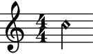
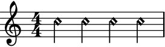
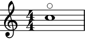
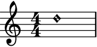

auxjad.HarmonicNote¶
-
class
auxjad.HarmonicNote(*arguments, multiplier: Union[abjad.utilities.Duration.Duration, Tuple[int, int]] = None, tag: abjad.system.Tag.Tag = None, style: str = 'harmonic', markup: str = None, direction: (<class 'str'>, <enum 'VerticalAlignment'>) = 'up')¶ Creates a note with tweaked notehead for harmonics. This is a child class of
abjad.Note.Usage is similar to
abjad.Note:>>> harm = auxjad.HarmonicNote("c''4") >>> harm.style 'harmonic' >>> abjad.f(harm) \tweak style #'harmonic c''4
And similarly to
abjad.Note, pitch and duration can be input in many different ways:>>> harm1 = auxjad.HarmonicNote("c''4") >>> harm2 = auxjad.HarmonicNote("c''", 1/4) >>> harm3 = auxjad.HarmonicNote(12, 0.25) >>> harm4 = auxjad.HarmonicNote(12, abjad.Duration(1, 4)) >>> staff = abjad.Staff([harm1, harm2, harm3, harm4]) >>> abjad.f(staff) \new Staff { \tweak style #'harmonic c''4 \tweak style #'harmonic c''4 \tweak style #'harmonic c''4 \tweak style #'harmonic c''4 }
When creating an
HarmonicNote, use the keyword argumentstyleto set a different type of note head, such as'harmonic-mixed':>>> harm = auxjad.HarmonicNote("c''4", ... style='harmonic-mixed', ... ) >>> harm.style 'harmonic-mixed' >>> abjad.f(harm) \tweak style #'harmonic-mixed c''4
Similarly to
abjad.Note,HarmonicNotecan take multipliers:>>> harm = auxjad.HarmonicNote("c''4", ... multiplier=(2, 3), ... ) >>> harm.multiplier abjad.Multiplier(2, 3) >>> abjad.f(harm) \tweak style #'harmonic c''4 * 2/3

All properties of
abjad.Noteare also available to be read. This class also includes a new property namedstyle:>>> harm = auxjad.HarmonicNote("c''4") >>> harm.written_pitch "c''" >>> harm.written_duration 1/4 >>> harm.style 'harmonic'
All these properties can be set to different values after initialisation:
>>> harm.written_pitch = 18 >>> harm.written_duration = abjad.Duration(1, 8) >>> harm.style = 'harmonic-mixed' >>> harm.written_pitch "fs''" >>> harm.written_duration 1/8 >>> harm.style 'harmonic-mixed'
To create a harmonic note with a regular note head and with a flageolet circle above it, use the style
'flageolet':>>> harm = auxjad.HarmonicNote("c''1", ... style='flageolet', ... ) >>> harm.style 'flageolet' >>> abjad.f(harm) c''1 \flageolet
To add a markup expression to the harmonic note, use the
markupoptional keyword argument, which takes strings. By default, the markup position is above the harmonic note, but this can be overridden using the keyworddirection, which can take strings as well asabjad.Upandabjad.Down:>>> harm1 = auxjad.HarmonicNote("d''1") >>> harm2 = auxjad.HarmonicNote("d''1", ... markup='III.', ... ) >>> harm3 = auxjad.HarmonicNote("d''1", ... markup='III.', ... direction=abjad.Down) >>> staff = abjad.Staff([harm1, harm2, harm3]) >>> abjad.f(staff) \new Staff { \tweak style #'harmonic d''1 \tweak style #'harmonic d''1 ^ \markup { III. } \tweak style #'harmonic d''1 _ \markup { III. } }

Setting
markuptoNonewill remove the markup from the note.>>> harm = auxjad.HarmonicNote("d''1", ... markup='III.', ... ) >>> harm.markup = None >>> abjad.f(harm) \tweak style #'harmonic d''1
Warning
If another markup is attached to the harmonic note, trying to set the
markuptoNonewill raise an Exception:>>> harm = auxjad.HarmonicNote("d''1") >>> abjad.attach(abjad.Markup('test'), harm) >>> harm.markup = 'III.' >>> harm.markup = None Exception: multiple indicators attached to client.
Methods
__init__(*arguments[, multiplier, tag, …])Initialises self.
from_pitch_and_duration(pitch, duration)Makes note from
pitchandduration.Attributes
directionThe direction of the harmonic note head.
markupThe markup of the harmonic note head.
multiplierGets multiplier.
note_headGets and sets note-head.
styleThe style of the harmonic note head.
tagGets component tag.
written_durationGets and sets written duration.
written_pitchGets and sets written pitch.